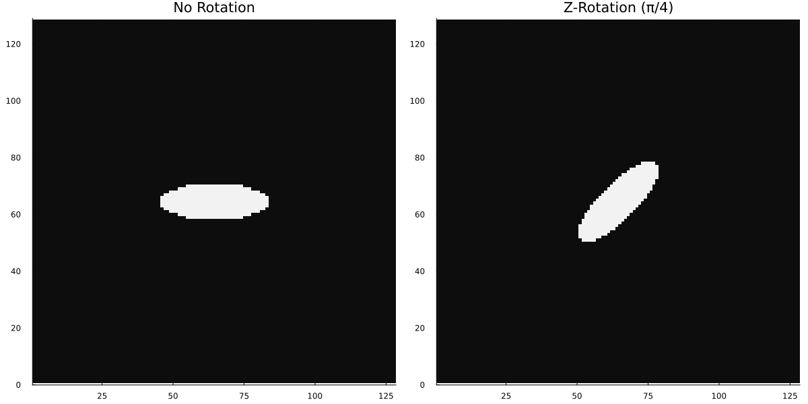

Geometry Primitives
GeometricMedicalPhantoms is built on a foundation of geometric primitives: simple mathematical shapes that can be combined to create complex phantoms. Understanding these primitives is essential for building custom phantoms.
Overview
All phantoms are ultimately composed of collections of geometric primitives that are rendered at each voxel. The available primitives are:
- Ellipsoid: General 3D elliptical shape (axis-aligned)
- SuperEllipsoid: Generalized ellipsoid with adjustable curvature
- RotatedEllipsoid: Ellipsoid with arbitrary 3D rotation
- CylinderX, CylinderY, CylinderZ: Cylinders aligned with coordinate axes
Each primitive is defined by a set of parameters (center, size, intensity) and a mathematical function that determines whether a point in space belongs to the shape.
Ellipsoid
An ellipsoid is a generalization of a sphere to three dimensions with potentially different radii in each direction.
Mathematical Definition
An ellipsoid centered at $(c_x, c_y, c_z)$ with radii $(r_x, r_y, r_z)$ is defined by:
\[\left(\frac{x - c_x}{r_x}\right)^2 + \left(\frac{y - c_y}{r_y}\right)^2 + \left(\frac{z - c_z}{r_z}\right)^2 \leq 1\]
A point is inside the ellipsoid if the left side is ≤ 1, and outside otherwise.
Parameters
# Create a simple ellipsoid
# Ellipsoid(cx, cy, cz, rx, ry, rz, intensity)
ell = Ellipsoid(0.0, 0.0, 0.0, 1.0, 0.5, 0.8, 1.0)
println("Ellipsoid: $ell")Ellipsoid: Ellipsoid{Float64, Float64}(0.0, 0.0, 0.0, 1.0, 0.5, 0.8, 1.0)Visual Example
# Draw a phantom containing a single ellipsoid
primitives = [
Ellipsoid(0.0, 0.0, 0.0, 0.8, 0.6, 0.5, 1.0)
]
# Create simple 2D drawing function for visualization
phantom_2d = zeros(Float32, 128, 128)
for i in 1:128
for j in 1:128
x = (i - 64) / 64 # Map to [-1, 1]
y = (j - 64) / 64
z = 0.0 # Center z-slice
for prim in primitives
# Simple point-in-ellipsoid test
dx, dy, dz = x - prim.cx, y - prim.cy, z - prim.cz
if (dx/prim.rx)^2 + (dy/prim.ry)^2 + (dz/prim.rz)^2 <= 1.0
phantom_2d[i, j] = prim.intensity
end
end
end
end
jim(phantom_2d; title="Single Ellipsoid")
Use Cases
Ellipsoids are used throughout the Shepp-Logan phantom (12 ellipses) and are suitable for:
- Anatomical structures with roughly elliptical cross-sections (brain, organs)
- Lesions and tumors
- Cysts and other pathological structures
SuperEllipsoid
A SuperEllipsoid generalizes the ellipsoid by introducing adjustable exponents. This allows creating shapes ranging from perfect spheres to rounded boxes.
Mathematical Definition
A SuperEllipsoid centered at $(c_x, c_y, c_z)$ with radii $(r_x, r_y, r_z)$ and exponents $(e_x, e_y, e_z)$ is defined by:
\[\left|\frac{x - c_x}{r_x}\right|^{e_x} + \left|\frac{y - c_y}{r_y}\right|^{e_y} + \left|\frac{z - c_z}{r_z}\right|^{e_z} \leq 1\]
When all exponents equal 2, this reduces to the standard ellipsoid. As exponents increase, the shape becomes more "boxy"; as they decrease toward 1, it becomes more "pointy."
Parameters
# SuperEllipsoid with adjustable curvature
# SuperEllipsoid(cx, cy, cz, rx, ry, rz, (ex, ey, ez), intensity)
super_ell = SuperEllipsoid(0.0, 0.0, 0.0, 1.0, 0.8, 0.6, (2.0, 2.0, 2.0), 0.8)
println("SuperEllipsoid: $super_ell")SuperEllipsoid: SuperEllipsoid{Float64, Float64}(0.0, 0.0, 0.0, 1.0, 0.8, 0.6, (2.0, 2.0, 2.0), 0.8)Effect of Exponents
# Create phantoms with different exponents to show shape variation
fig_superell = plot(layout=(2,2), size=(800,800))
exponents_list = [(2.0, 2.0, 2.0), (1.5, 1.5, 1.5), (2.5, 2.5, 2.5), (3.0, 3.0, 3.0)]
exponent_labels = ["Standard (2,2,2)", "Pointy (1.5,1.5,1.5)", "Rounded (2.5,2.5,2.5)", "Boxy (3,3,3)"]
for (idx, (exp, label)) in enumerate(zip(exponents_list, exponent_labels))
phantom_super = zeros(Float32, 128, 128)
for i in 1:128
for j in 1:128
x = (i - 64) / 64
y = (j - 64) / 64
z = 0.0
# SuperEllipsoid point test
dx, dy, dz = x, y, z
if abs(dx/1.0)^exp[1] + abs(dy/0.8)^exp[2] + abs(dz/0.6)^exp[3] <= 1.0
phantom_super[i, j] = 1.0
end
end
end
# Plot in subplot
heatmap!(fig_superell[idx], phantom_super', title=label, aspect_ratio=:equal, color=:grays)
end
Use Cases
SuperEllipsoids are useful for:
- Anatomical structures with non-standard curvature
- Rounded rectangles (boxes with rounded corners)
- Organic shapes that are smoother or more angular than pure ellipsoids
- Creating variety in phantom designs while maintaining mathematical clarity
RotatedEllipsoid
A RotatedEllipsoid allows arbitrary 3D rotation of an ellipsoid using Euler angles.
Mathematical Definition
A RotatedEllipsoid is defined by:
- Standard ellipsoid equation after coordinate transformation
- Rotation matrix $R$ applied using Z-Y-X Euler angles (in radians)
The condition becomes: $(R^{-1}(P - C))^T D (R^{-1}(P - C)) \leq 1$
where $C$ is the center, $D$ is the diagonal matrix of $(1/r_x^2, 1/r_y^2, 1/r_z^2)$, and $R$ is the Z-Y-X rotation.
Parameters
# RotatedEllipsoid with 3D orientation
# RotatedEllipsoid(cx, cy, cz, rx, ry, rz, phi, theta, psi, intensity)
rot_ell = RotatedEllipsoid(0.0, 0.0, 0.0, 0.8, 0.4, 0.3, 0.3, 0.4, 0.2, 0.7)
println("RotatedEllipsoid: $rot_ell")RotatedEllipsoid: RotatedEllipsoid{Float64, Float64}(0.0, 0.0, 0.0, 0.8, 0.4, 0.3, 0.3, 0.4, 0.2, 0.7, :axial)Rotation Angles
Rotations are specified using Euler angles in Z-Y-X order (phi, theta, psi).
# Demonstrate rotation angles
using GeometricMedicalPhantoms
# Create axes
nx, ny, nz = 128, 128, 128
ax = collect(range(-1.0, 1.0, length=nx))
# Helper function to create and draw an ellipsoid
function draw_ellipsoid(phi, theta, psi, title_str)
phantom = zeros(Float32, nx, ny, nz)
# Using internal MaskingIntensityValue wrapper
ellipsoid = GeometricMedicalPhantoms.RotatedEllipsoid(
0.0, 0.0, 0.0, # center
0.3, 0.1, 0.3, # radii
phi, theta, psi, # rotations
GeometricMedicalPhantoms.MaskingIntensityValue(1.0f0) # intensity
)
GeometricMedicalPhantoms.draw!(phantom, ax, ax, ax, ellipsoid)
slice = phantom[:, :, 64]
return heatmap(slice', title=title_str, aspect_ratio=:equal, color=:grays, legend=false)
end
# Create visualizations
p1 = draw_ellipsoid(0.0, 0.0, 0.0, "No Rotation")
p2 = draw_ellipsoid(π/4, 0.0, 0.0, "Z-Rotation (π/4)")
fig_rotations = plot(p1, p2, layout=(1,2), size=(1200,600))
Use Cases
RotatedEllipsoids enable:
- Obliquely oriented vessels and tubes
- Anatomically realistic organ orientations (e.g., liver, kidney)
- Lesions aligned with anatomical axes
- Realistic representation of bone structures
Cylinders
Three varieties of cylinders, aligned with the coordinate axes:
CylinderZ (Aligned with Z-axis)
Extends along the Z-axis:
\[\sqrt{(x - c_x)^2 + (y - c_y)^2} \leq r \text{ and } |z - c_z| \leq \frac{\text{height}}{2}\]
# CylinderZ(cx, cy, cz, r, height, intensity)
cyl_z = CylinderZ(0.0, 0.0, 0.0, 0.3, 1.0, 0.9)
println("CylinderZ: $cyl_z")CylinderZ: CylinderZ{Float64, Float64}(0.0, 0.0, 0.0, 0.3, 1.0, 0.9)CylinderY (Aligned with Y-axis)
Extends along the Y-axis:
\[\sqrt{(x - c_x)^2 + (z - c_z)^2} \leq r \text{ and } |y - c_y| \leq \frac{\text{height}}{2}\]
CylinderX (Aligned with X-axis)
Extends along the X-axis:
\[\sqrt{(y - c_y)^2 + (z - c_z)^2} \leq r \text{ and } |x - c_x| \leq \frac{\text{height}}{2}\]
Visual Example
# Create 3D phantom volumes with each cylinder type
nx, ny, nz = 64, 64, 64
fov = 2.0
ax_x = collect(range(-fov/2, fov/2, length=nx))
ax_y = collect(range(-fov/2, fov/2, length=ny))
ax_z = collect(range(-fov/2, fov/2, length=nz))
# CylinderZ (extends along Z-axis)
cyl_z = CylinderZ(0.0, 0.0, 0.0, 0.3, 1.2, 1.0)
phantom_z = zeros(Float32, nx, ny, nz)
draw!(phantom_z, ax_x, ax_y, ax_z, cyl_z)
# CylinderY (extends along Y-axis)
cyl_y = CylinderY(0.0, 0.0, 0.0, 0.3, 1.2, 1.0)
phantom_y = zeros(Float32, nx, ny, nz)
draw!(phantom_y, ax_x, ax_y, ax_z, cyl_y)
# CylinderX (extends along X-axis)
cyl_x = CylinderX(0.0, 0.0, 0.0, 0.3, 1.2, 1.0)
phantom_x = zeros(Float32, nx, ny, nz)
draw!(phantom_x, ax_x, ax_y, ax_z, cyl_x)
# Create 3x3 layout: rows are cylinder types, columns are planes
fig = plot(layout=(3,3), size=(1200,1200))
# CylinderZ slices
heatmap!(fig[1,1], phantom_z[:, :, div(nz,2)]', title="CylinderZ - Axial", aspect_ratio=:equal, color=:grays, legend=false, axis=false)
heatmap!(fig[1,2], phantom_z[:, div(ny,2), :]', title="CylinderZ - Coronal", aspect_ratio=:equal, color=:grays, legend=false, axis=false)
heatmap!(fig[1,3], phantom_z[div(nx,2), :, :]', title="CylinderZ - Sagittal", aspect_ratio=:equal, color=:grays, legend=false, axis=false)
# CylinderY slices
heatmap!(fig[2,1], phantom_y[:, :, div(nz,2)]', title="CylinderY - Axial", aspect_ratio=:equal, color=:grays, legend=false, axis=false)
heatmap!(fig[2,2], phantom_y[:, div(ny,2), :]', title="CylinderY - Coronal", aspect_ratio=:equal, color=:grays, legend=false, axis=false)
heatmap!(fig[2,3], phantom_y[div(nx,2), :, :]', title="CylinderY - Sagittal", aspect_ratio=:equal, color=:grays, legend=false, axis=false)
# CylinderX slices
heatmap!(fig[3,1], phantom_x[:, :, div(nz,2)]', title="CylinderX - Axial", aspect_ratio=:equal, color=:grays, legend=false, axis=false)
heatmap!(fig[3,2], phantom_x[:, div(ny,2), :]', title="CylinderX - Coronal", aspect_ratio=:equal, color=:grays, legend=false, axis=false)
heatmap!(fig[3,3], phantom_x[div(nx,2), :, :]', title="CylinderX - Sagittal", aspect_ratio=:equal, color=:grays, legend=false, axis=false)
Use Cases
Cylinders represent:
- Blood vessels
- Anatomical tubes (airways, ducts)
- Symmetric structures
- Validation phantoms (constant cross-section)
Implementing New Shapes
To add a new geometric primitive to GeometricMedicalPhantoms, you need to implement the following:
1. Define the Shape Structure
Create a struct that inherits from GeometricMedicalPhantoms.Shape:
struct MyCustomShape{T,T2} <: GeometricMedicalPhantoms.Shape
# Position parameters
cx::T
cy::T
cz::T
# Shape-specific parameters
param1::T
param2::T
# Intensity
intensity::T2
end2. Implement Rotation Functions
For 2D slicing support, implement coordinate transformations:
# Coronal view: swap y and z
GeometricMedicalPhantoms.rotate_coronal(shape::MyCustomShape) =
MyCustomShape(shape.cx, shape.cz, shape.cy, shape.param1, shape.param2, shape.intensity)
# Sagittal view: swap x with z, then y with x
GeometricMedicalPhantoms.rotate_sagittal(shape::MyCustomShape) =
MyCustomShape(shape.cy, shape.cz, shape.cx, shape.param1, shape.param2, shape.intensity)3. Implement the draw! Function
This is the core rendering function. It should:
- Calculate bounding box for efficiency
- Iterate only over relevant voxels
- Test if each point is inside the shape
- Call
draw_pixel!to set the intensity
function GeometricMedicalPhantoms.draw!(
phantom::AbstractArray{T,3},
ax_x::AbstractVector,
ax_y::AbstractVector,
ax_z::AbstractVector,
shape::MyCustomShape
) where T
# Extract parameters
cx, cy, cz = shape.cx, shape.cy, shape.cz
param1, param2 = shape.param1, shape.param2
intensity = shape.intensity
# Calculate bounding box to avoid checking all voxels
# Use idx_bounds from utils.jl
ix_min, ix_max = GeometricMedicalPhantoms.idx_bounds(ax_x, cx, radius_x)
iy_min, iy_max = GeometricMedicalPhantoms.idx_bounds(ax_y, cy, radius_y)
iz_min, iz_max = GeometricMedicalPhantoms.idx_bounds(ax_z, cz, radius_z)
# Early exit if shape is outside phantom
if ix_min == -1 || iy_min == -1 || iz_min == -1
return
end
# Iterate over bounding box
for iz in iz_min:iz_max, iy in iy_min:iy_max, ix in ix_min:ix_max
x, y, z = ax_x[ix], ax_y[iy], ax_z[iz]
# Test if point is inside shape
# This is shape-specific mathematical condition
if inside_shape_test(x, y, z, cx, cy, cz, param1, param2)
# Use draw_pixel! which handles Additive vs Masking modes
GeometricMedicalPhantoms.draw_pixel!(phantom, intensity, ix, iy, iz)
end
end
return phantom
end4. Implement 2D Slicing Support (Optional)
For 2D slice support at arbitrary positions:
function GeometricMedicalPhantoms.draw!(
phantom::AbstractArray{T,2},
ax_1::AbstractVector,
ax_2::AbstractVector,
ax_3_val::Real, # Fixed coordinate value
shape::MyCustomShape
) where T
# Similar to 3D but with fixed coordinate
# Iterate over 2D grid and test if points at ax_3_val are inside shape
end5. Add Documentation
Add docstrings explaining:
- Mathematical definition of the shape
- Parameter meanings
- Typical use cases
@doc raw\"""
MyCustomShape(cx, cy, cz, param1, param2, intensity)
Custom geometric shape for medical phantoms.
The shape is defined by the equation:
``f(x, y, z) \\leq 1``
# Fields
- `cx, cy, cz`: Center position
- `param1`: Description of parameter 1
- `param2`: Description of parameter 2
- `intensity`: Intensity value
# Example
\```julia
shape = MyCustomShape(0.0, 0.0, 0.0, 1.0, 0.5, 0.8)
\```
"""Example: Complete Implementation
See the source code for Ellipsoid, CylinderZ, or SuperEllipsoid in the package for complete examples of shape implementations.